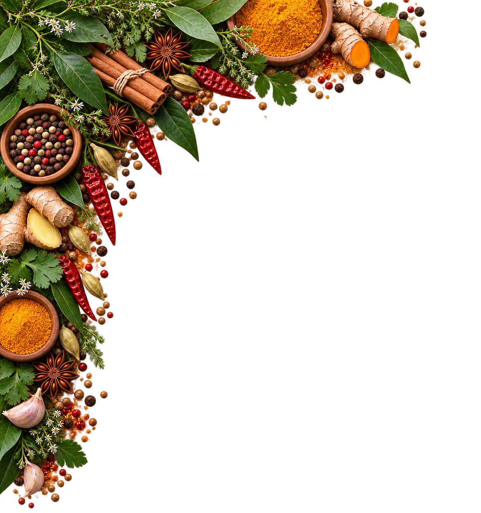

Culinaire wereldatlas
Reis langs culinaire regio's, ontdek hun typische ingrediënten en leer de gerechten kennen die iedere keuken haar eigen karakter geven.
Beweeg met de muis over een regio om meer te lezen over de keuken en haar ingrediënten.